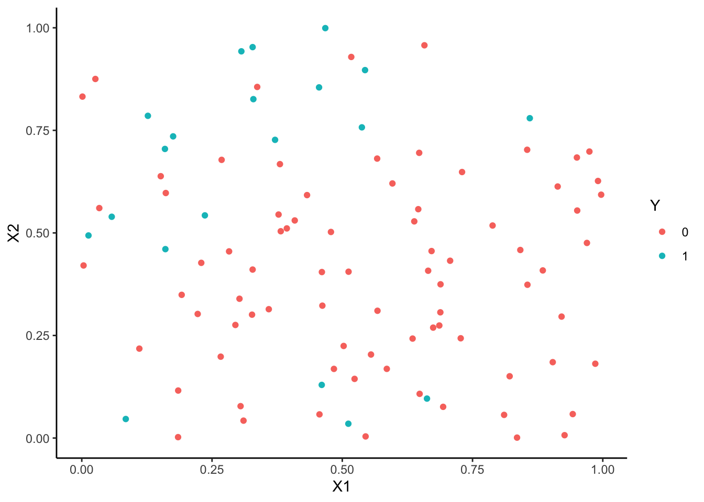
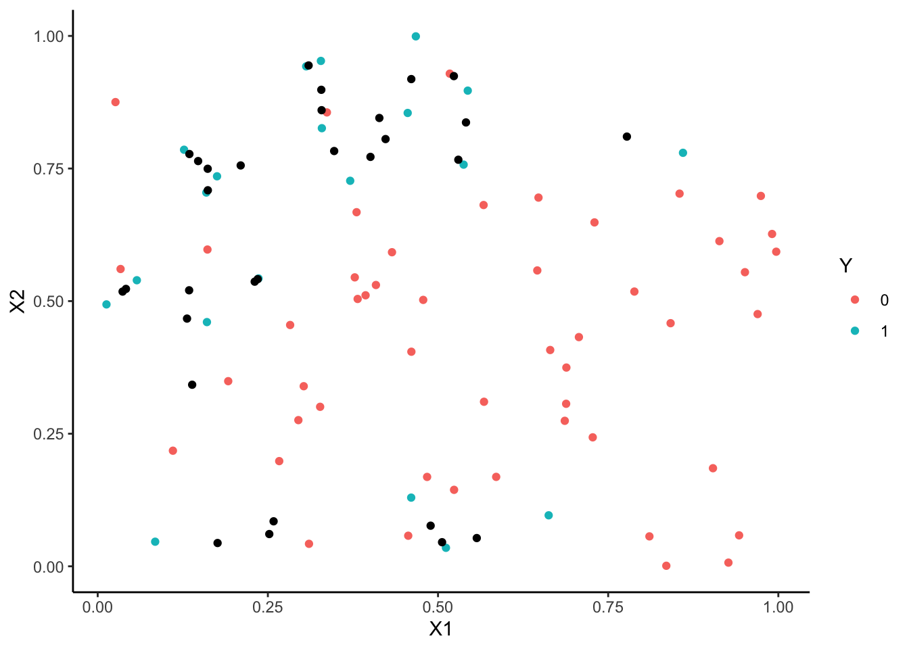
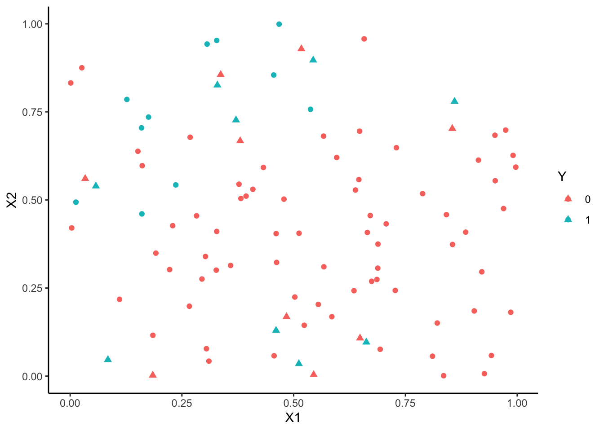
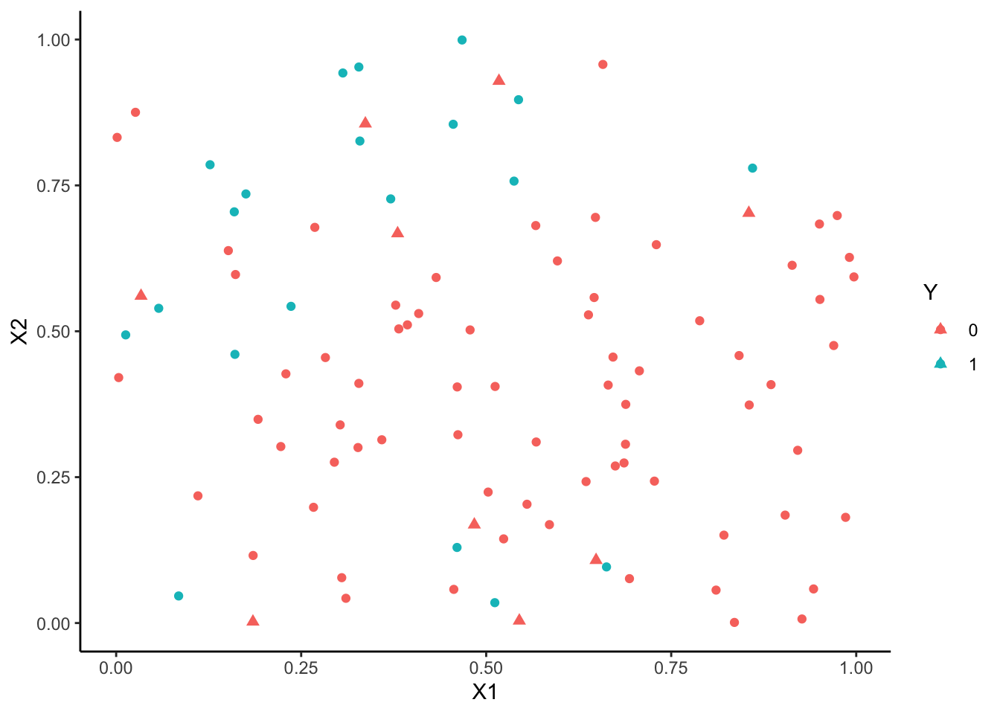
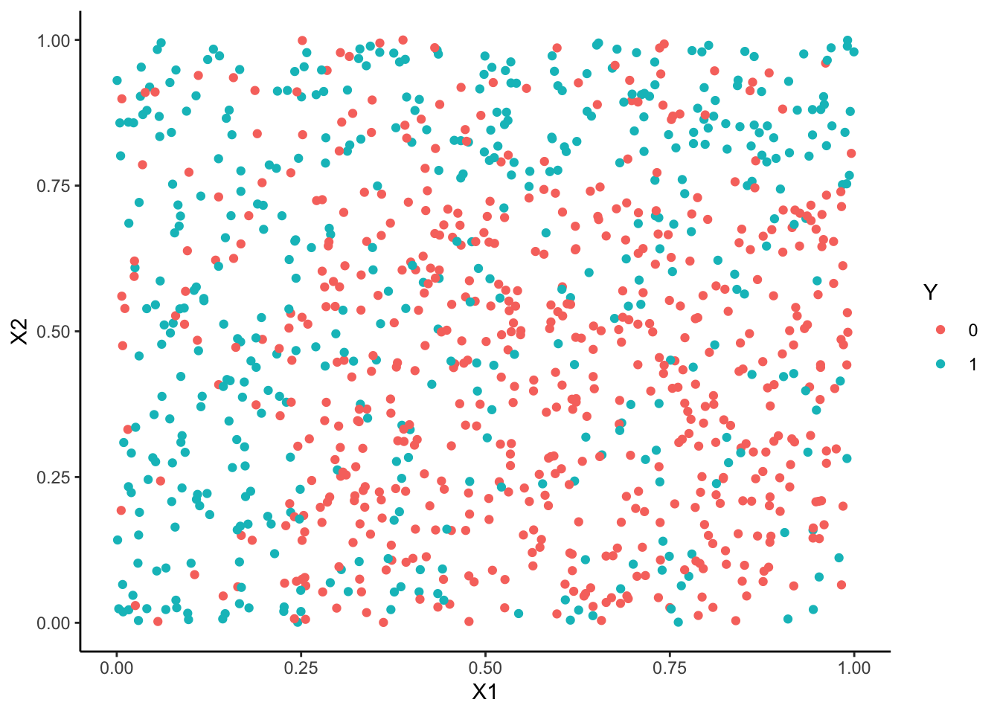
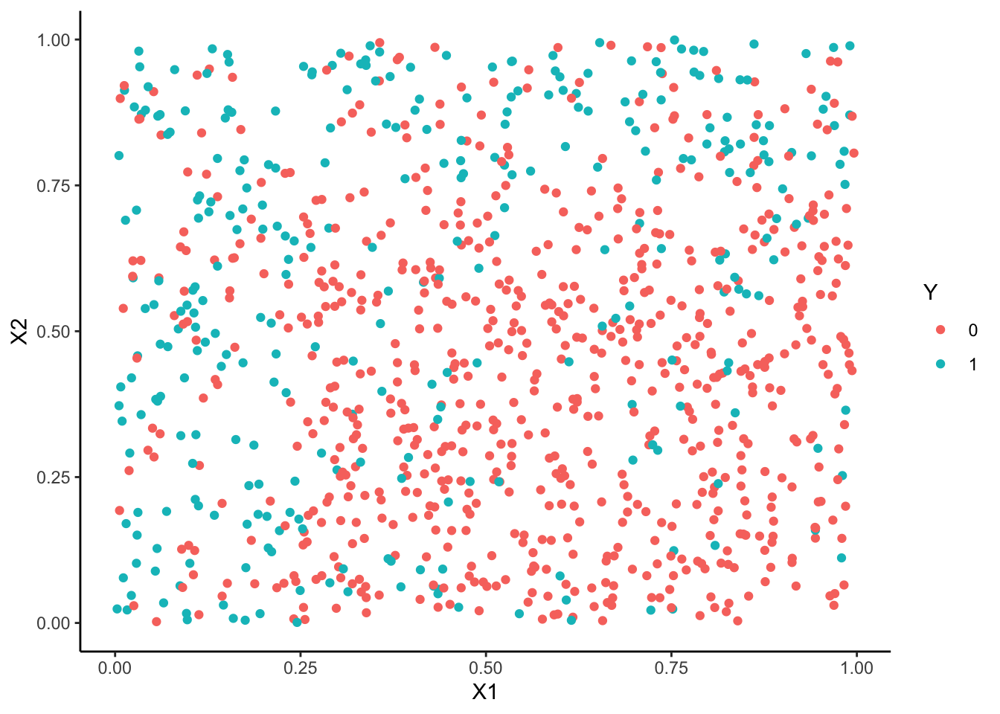
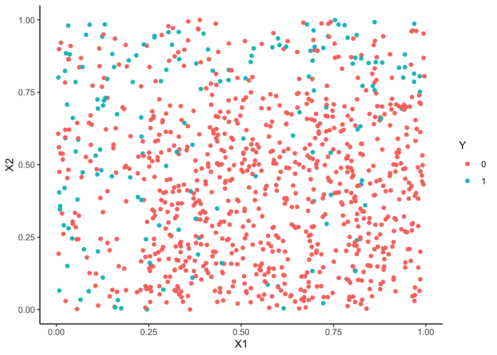

Chapitre 7 Données déséquilibrées
On parle de données déséquilibrées lorsque les deux modalités de la variable cible \(Y\) ne sont pas représentées de façon égale dans l’échantillon, ou plus précisément lorsqu’une des deux modalités est fortement majoritaire. Ce contexte est fréquemment rencontré en pratique, on peut citer les cas de détection de fraudes (peu de fraudeurs), de la présence d’une maladie rare (peu de patients atteints), du risque de crédit (peu de mauvais payeurs)… Les algorithmes standards peuvent être mis en difficultés et de nouvelles stratégies doivent être élaborées. Les stratégies classiques permettant de répondre à ce problème consistent à
- utiliser des critères de performance adaptés au déséquilibre ;
- ré-échantillonner les données pour se rapprocher d’une situation d’équilibre.
Nous présentons ces stratégies à travers quelques exercices.
7.1 Critères de performance pour données déséquilibrées
La notion de risque en machine learning est capitale puisque c’est à partir de l’estimation de ces risques que l’on calibre des algorithmes et que l’on choisit un algorithme de prévision. En présence de données déséquilibré, il convient de choisir un risque adapté. En effet, il est le plus souvent important de parvenir à bien identifier des individus de la classe minoritaire. Des critères tels que l’accuracy ou l’erreur de classification ne sont pas pertinents pour ce cadre. On va privilégier des critères comme
- le balanced accuracy \[\text{Bal Acc}=\frac{1}{2}\mathbf P(g(X)=1|Y=1)+\frac{1}{2}\mathbf P(g(X)=-1|Y=-1)=\frac{\text{TPR+TNR}}{2}.\]
- le \(F_1\)-score \[F_1=2\,\frac{\text{Precision }\times\text{Recall}}{\text{Precision }+\text{Recall}},\] avec \[\text{Precision}=\mathbf P(Y=1|g(X)=1)\quad\text{et}\quad\text{Recall}=\mathbf P(g(X)=1|Y=1).\]
- le kappa de Cohen \[\kappa=\frac{\mathbf P(a)-\mathbf P(e)}{1-\mathbf P(e)}\] où \(\mathbf P(a)\) représente l’accuracy et \(\mathbf P(e)\) l’accuracy sous une hypothèse d’indépendance.
- la courbe ROC et l’AUC…
Comme d’habitude, ces critères sont inconnus et doivent être estimés par des méthodes de ré-échantillonnage de type validation croisée.
Générer un vecteur d’observations Y de taille 500 selon une loi de Bernoulli de paramètre 0.05.
Générer un vecteur de prévisions P1 de taille 500 selon une loi de Bernoulli de paramètre 0.01.
Générer un vecteur de prévision P2 de taille 500 tel que \[\mathcal L(P2|Y=0)=\mathcal B(0.10)\quad\text{et}\quad \mathcal L(P2|Y=1)=\mathcal B(0.85).\]
Dresser les tables de contingence de P1 et P2 à l’aide de table. Commenter.
On remarque que P1 a tendance à prédire très souvent 0 (la classe majoritaire) alors que P2 est capable d’identifier plus d’invididus de la petite classe. Du point de vue de l’accuracy on va privilégier P1, néanmoins dans de nombreux cas P2 est plus pertinent.
Pour P2, calculer, avec les fonctions usuelles de
R, l’accuracy, le recall et la précision.En déduire le F1-score.
Même question pour le \(\kappa\) de Cohen.
Retrouver ces indicateurs à l’aide de la fonction confusionMatrix de caret puis comparer les prévisions P1 et P2.
confusionMatrix(data=P1,reference=Y,mode="everything",positive="1") Confusion Matrix and Statistics Reference Prediction 0 1 0 471 23 1 5 1 Accuracy : 0.944 95% CI : (0.9201, 0.9625) No Information Rate : 0.952 P-Value [Acc > NIR] : 0.827961 Kappa : 0.0484 Mcnemar's Test P-Value : 0.001315 Sensitivity : 0.04167 Specificity : 0.98950 Pos Pred Value : 0.16667 Neg Pred Value : 0.95344 Precision : 0.16667 Recall : 0.04167 F1 : 0.06667 Prevalence : 0.04800 Detection Rate : 0.00200 Detection Prevalence : 0.01200 Balanced Accuracy : 0.51558 'Positive' Class : 1 confusionMatrix(data=P2,reference=Y,mode="everything",positive="1") Confusion Matrix and Statistics Reference Prediction 0 1 0 432 8 1 44 16 Accuracy : 0.896 95% CI : (0.8659, 0.9213) No Information Rate : 0.952 P-Value [Acc > NIR] : 1 Kappa : 0.3354 Mcnemar's Test P-Value : 1.212e-06 Sensitivity : 0.6667 Specificity : 0.9076 Pos Pred Value : 0.2667 Neg Pred Value : 0.9818 Precision : 0.2667 Recall : 0.6667 F1 : 0.3810 Prevalence : 0.0480 Detection Rate : 0.0320 Detection Prevalence : 0.1200 Balanced Accuracy : 0.7871 'Positive' Class : 1L’accuracy privilégie clairement P1 alors que d’autres critères comme le balanced accuracy, le F1-score ou le kappa de Cohen vont sélectionner P2. Ces derniers critères sont mieux adaptés pour prendre en considération la capacité à bien identifier la classe minoritaire.
7.2 Ré-équilibrage
En complément du choix d’un critère pertinent, il peut être intéressant de tenter de ré-équilibrer l’échantillon pour aider les algorithmes à mieux détecter les individus de la classe minoritaire. Les méthodes classiques consistent à créer de nouvelles observations de la classe minoritaire (oversampling) et/ou supprimer des individus de la classe minoritaire (undersampling).
On considère le jeu de données df ci-dessous où on cherche à prédire Y par X1 et X2.
n <- 2000
set.seed(1234)
X1 <- runif(n)
set.seed(5678)
X2 <- runif(n)
set.seed(9012)
R1 <- X1<=0.25
R2 <- (X1>0.25 & X2>=0.75)
R3 <- (X1>0.25 & X2<0.75)
Y <- rep(0,n)
Y[R1] <- rbinom(sum(R1),1,0.75)
Y[R2] <- rbinom(sum(R2),1,0.75)
Y[R3] <- rbinom(sum(R3),1,0.25)
df1 <- data.frame(X1,X2,Y)
df1$Y <- factor(df1$Y)
indDY1 <- which(df1$Y==1)
df1.1 <- df1[-indDY1[1:650],]
df1.2 <- df1.1[sample(nrow(df1.1),1000),]
df <- df1.2[sample(nrow(df1.2),100),]
rownames(df) <- NULL
p1 <- ggplot(df)+aes(x=X1,y=X2,color=Y)+geom_point()
p1
On a ici 4 fois plus d’observations dans le groupe 0.
On commence par faire du oversampling avec la fonction
RandOverClassif.Effectuer le ré-échantillonnage et expliquer.
On duplique des observations du groupe 1 pour atteindre le nombre d’observations du groupe 0.
Corriger les paramètres de la fonction de manière à avoir 80 observations dans le groupe 0 et 60 dans le groupe 1.
Il suffit de laisser intact le groupe 0 et de multiplier par 3 le nombre d’observations du groupe 1.
On s’intéresse maintenant à l’algorithme SMOTE
Exécuter la fonction SmoteClassif avec
k=3et les les paramètres par défaut30 observations ont été crées par l’algorithme SMOTE. On a également enlevé des observations du groupe 1 pour avoir autant d’observations dans les deux groupes.
Visualiser les observations smote.
new <- anti_join(smote1,df) old <- inner_join(smote1,df) ggplot(old)+aes(x=X1,y=X2)+geom_point(aes(color=Y))+ geom_point(data=new,color="black")
Corriger les paramètres de la fonction de manière à avoir 80 observations dans le groupe 0 et 60 dans le groupe 1.
Ici encore il “suffit” de jouer avec l’option
C.perc.
On souhaite maintenant ré-équilibrer par random undersampling. Utiliser la fonction RandUnderClassif pour effectuer un tel ré-équilibrage. Ici encore on pourra faire varier les paramètres.
under1 <- RandUnderClassif(Y~.,dat=df) summary(under1) X1 X2 Y Min. :0.01288 Min. :0.006945 0:20 1st Qu.:0.23283 1st Qu.:0.277733 1:20 Median :0.38112 Median :0.525170 Mean :0.42021 Mean :0.512639 3rd Qu.:0.54655 3rd Qu.:0.740836 Max. :0.96958 Max. :0.999183On supprimer des obseravtions du groupe 0 pour avoir le même nombre d’observations dans les deux groupes. Ici encore on peut contrôler le niveau de ré-équilibrage avec
C.perc:On passe maintenant à l’algorithme Tomek.
Sans utiliser la fonction TomekClassif identifier les paires d’observations qui ont un lien de Tomek. On pourra utiliser la fonction nng du package
cccd.On rappelle que deux observations ont un lien de Tomek si elles sont plus proches voisins mutuels et de deux groupes différents. On commence donc par identifier les plus proches voisins mutuels :
library(cccd) unppv <- nng(x=df[,1:2],k=1,mutual=TRUE) graph_mut <- as_data_frame(unppv) graph_mut from to 1 1 13 2 2 50 3 3 54 4 4 98 5 5 42 6 6 35 7 9 96 8 12 30 9 16 41 10 18 100 11 19 44 12 20 92 13 24 28 14 26 87 15 27 91 16 29 64 17 31 82 18 32 94 19 33 69 20 36 68 21 37 99 22 40 62 23 45 55 24 48 51 25 52 66 26 56 58 27 65 75 28 67 77 29 72 86 30 73 93 31 74 89Puis on récupère les groupes de ces observations afin de ne conserver que les paires qui proviennent de groupes différents :
Retrouver ces paires à l’aide de la fonction Tomek LinK.
Visualiser les observations supprimées. On prendra soin d’expliquer l’option
remde TomekClassif.On dispose de deux stratégies. On peut enlever les paires entières qui sont T-link avec l’option par défaut
ggplot(tomek1[[1]])+aes(x=X1,y=X2,color=Y)+geom_point()+ geom_point(data=df[tomek1[[2]],],shape=17,size=2)
On peut également ne supprimer que l’élelément du T-link du groupe majoritaire avec l’option
rem=“maj”:tomek2 <- TomekClassif(Y~.,dat=df,rem="maj") tomek2[[2]] [1] 4 41 100 19 87 29 55 86 89 ggplot(tomek2[[1]])+aes(x=X1,y=X2,color=Y)+geom_point()+ geom_point(data=df[tomek2[[2]],],shape=17,size=2)
On considère 3 jeux de données df1, df2 et df3.
n <- 2000
set.seed(12345)
X1 <- runif(n)
set.seed(5678)
X2 <- runif(n)
set.seed(9012)
R1 <- X1<=0.25
R2 <- (X1>0.25 & X2>=0.75)
R3 <- (X1>0.25 & X2<0.75)
Y <- rep(0,n)
Y[R1] <- rbinom(sum(R1),1,0.75)
Y[R2] <- rbinom(sum(R2),1,0.75)
Y[R3] <- rbinom(sum(R3),1,0.25)
df1 <- data.frame(X1,X2,Y)
df1$Y <- factor(df1$Y)
indDY1 <- which(df1$Y==1)
df2 <- df1[-indDY1[1:400],]
df3 <- df1[-indDY1[1:700],]
df1 <- df1[sample(nrow(df1),1000),]
df2 <- df2[sample(nrow(df2),1000),]
df3 <- df3[sample(nrow(df3),1000),]Comparer la distribution de Y pour ces trois jeux de données et visualiser les observations.



Les trois échantillons sont de même taille. Le groupe 0 est toujours plus important que le groupe 1 mais le déséquilibre est plus prononcé pour l’échantillon 2 et surtout l’échantillon 3.
On sépare ces 3 échantillons en un échantillon d’apprentissage et un échantillon test.
set.seed(123) a1 <- createDataPartition(1:nrow(df1),p=2/3) a2 <- createDataPartition(1:nrow(df2),p=2/3) a3 <- createDataPartition(1:nrow(df3),p=2/3) train1 <- df1[a1$Resample1,] train2 <- df2[a2$Resample1,] train3 <- df3[a3$Resample1,] test1 <- df1[-a1$Resample1,] test2 <- df2[-a2$Resample1,] test3 <- df3[-a3$Resample1,]Ajuster une forêt aléatoire sur les 3 échantillon d’apprentissage, calculer les labels prédits sur les échantillons tests et estimer les différents indicateurs vus en cours à l’aide de confusionMatrix.
library(randomForest) rf1 <- randomForest(Y~.,data=train1) rf2 <- randomForest(Y~.,data=train2) rf3 <- randomForest(Y~.,data=train3) p1 <- predict(rf1,newdata=test1) p2 <- predict(rf2,newdata=test2) p3 <- predict(rf3,newdata=test3)confusionMatrix(data=p1,reference=test1$Y) Confusion Matrix and Statistics Reference Prediction 0 1 0 141 67 1 43 81 Accuracy : 0.6687 95% CI : (0.6152, 0.7191) No Information Rate : 0.5542 P-Value [Acc > NIR] : 1.385e-05 Kappa : 0.3187 Mcnemar's Test P-Value : 0.02831 Sensitivity : 0.7663 Specificity : 0.5473 Pos Pred Value : 0.6779 Neg Pred Value : 0.6532 Prevalence : 0.5542 Detection Rate : 0.4247 Detection Prevalence : 0.6265 Balanced Accuracy : 0.6568 'Positive' Class : 0 confusionMatrix(data=p2,reference=test2$Y) Confusion Matrix and Statistics Reference Prediction 0 1 0 196 48 1 37 51 Accuracy : 0.744 95% CI : (0.6935, 0.7901) No Information Rate : 0.7018 P-Value [Acc > NIR] : 0.05113 Kappa : 0.3681 Mcnemar's Test P-Value : 0.27808 Sensitivity : 0.8412 Specificity : 0.5152 Pos Pred Value : 0.8033 Neg Pred Value : 0.5795 Prevalence : 0.7018 Detection Rate : 0.5904 Detection Prevalence : 0.7349 Balanced Accuracy : 0.6782 'Positive' Class : 0 confusionMatrix(data=p3,reference=test3$Y) Confusion Matrix and Statistics Reference Prediction 0 1 0 253 47 1 21 11 Accuracy : 0.7952 95% CI : (0.7477, 0.8373) No Information Rate : 0.8253 P-Value [Acc > NIR] : 0.933101 Kappa : 0.1373 Mcnemar's Test P-Value : 0.002432 Sensitivity : 0.9234 Specificity : 0.1897 Pos Pred Value : 0.8433 Neg Pred Value : 0.3438 Prevalence : 0.8253 Detection Rate : 0.7620 Detection Prevalence : 0.9036 Balanced Accuracy : 0.5565 'Positive' Class : 0On remarque que l’accuracy est meilleur pour le 3ème échantillon, contrairement à des indicateurs tels que le \(\kappa\) de Cohen ou le balanced accuracy.
On considère uniquement l’échantillon df3. Refaire l’analyse précédente en utilisant des techniques de ré-échantillonnage.
Le ré-équilibrage doit porter uniquement sur l’échantillon d’apprentissage. On propose d’utiliser le radom oversampling, smote, le random undersampling et tomek.
train3.under <- RandUnderClassif(Y~.,dat=train3) train3.over <- RandOverClassif(Y~.,dat=train3) train3.smote <- SmoteClassif(Y~.,dat=train3) train3.tomek <- TomekClassif(Y~.,dat=train3)[[1]]On entraîne les forêts aléatoires sur ces nouveaux échantillons et on prédit les individus de l’échantillon test
rf3.under <- randomForest(Y~.,data=train3.under) rf3.over <- randomForest(Y~.,data=train3.over) rf3.smote <- randomForest(Y~.,data=train3.smote) rf3.tomek <- randomForest(Y~.,data=train3.tomek) p3.under <- predict(rf3.under,newdata=test3) p3.over <- predict(rf3.over,newdata=test3) p3.smote <- predict(rf3.smote,newdata=test3) p3.tomek <- predict(rf3.tomek,newdata=test3) mat_prev <- data.frame(aucun=p3,under=p3.under,over=p3.over,smote=p3.smote,tomek=p3.tomek,obs=test3$Y)On en déduit les critères
monba <- function(prev,obs){confusionMatrix(prev,obs,positive="1")$byClass[11]} monF1 <- function(prev,obs){confusionMatrix(prev,obs,positive="1")$byClass[7]} monkappa <- function(prev,obs){confusionMatrix(prev,obs,positive="1")$overall[2]} mat_prev %>% pivot_longer(-obs,names_to="method",values_to="prev") %>% group_by(method,.add=TRUE) %>% summarize(Acc=mean(obs==prev),BA=monba(prev,obs),F1=monF1(prev,obs),kapp=monkappa(prev,obs),.groups="keep") %>% summarize_all(~round(.,3)) # A tibble: 5 x 5 method Acc BA F1 kapp <chr> <dbl> <dbl> <dbl> <dbl> 1 aucun 0.795 0.557 0.244 0.137 2 over 0.792 0.629 0.389 0.264 3 smote 0.699 0.634 0.383 0.204 4 tomek 0.819 0.564 0.25 0.17 5 under 0.675 0.687 0.432 0.249L’accuracy est sans surprise meilleur lorsqu’on ne ré-équilibre pas. Cependant les méthodes de ré-équilibrage permettent ici d’améliorer (plus ou moins) les autres critères.
7.3 Exercices supplémentaires
Dans le cadre de l’échantillonnage rétrospectif pour le modèle logistique vu en cours, démontrer la propriété qui lie le modèle logistique initial au modèle ré-équilibré.
On a \[\text{logit}\, p_\beta(x_i)=\log\frac{\mathbf P(y_i=1)}{\mathbf P(y_i=0)}\quad\text{et}\quad \text{logit}\, p_\gamma(x_i)=\log\frac{\mathbf P(y_i=1|s_i=1)}{\mathbf P(y_i=0|s_i=1)}.\] Or \[\mathbf P(y_i=1|s_i=1)=\frac{\mathbf P(y_i=1,s_i=1)}{\mathbf P(s_i=1)}=\frac{\mathbf P(s_i=1|y_i=1)\mathbf P(y_i=1)}{\mathbf P(s_i=1)}\] et \[\mathbf P(y_i=0|s_i=1)=\frac{\mathbf P(y_i=0,s_i=1)}{\mathbf P(s_i=1)}=\frac{\mathbf P(s_i=1|y_i=0)\mathbf P(y_i=0)}{\mathbf P(s_i=1)}.\] Donc \[\text{logit}\, p_\gamma(x_i)=\log\frac{\mathbf P(y_i=1)}{\mathbf P(y_i=0)}+\log\frac{\mathbf P(s_i=1|y_i=1)}{\mathbf P(s_i=1|y_i=0)}=\text{logit}\,p_\beta(x_i)+\log\left(\frac{\tau_{1}}{\tau_{0}}\right).\]
Une étude cas/témoins est réalisée pour mesurer l’effet du tabac sur une pathologie. Pour ce faire, on choisit \(n_1=250\) patients atteints de la pathologie (cas) et \(n_0=250\) patients sains (témoins). Les résultats de l’étude sont présentés ci-dessous
| Fumeur | Non fumeur | |
|---|---|---|
| Non malade | 48 | 202 |
| Malade | 208 | 42 |
A partir des données obtenues, estimer à l’aide d’un modèle logistique la probabilité d’être atteint pour un fumeur, puis pour un non fumeur.
Pour simplifier on va construire un jeu de données qui correspond au résultat :
X<-rep(1,500) X[1:256]<-"fumeur" X[257:500]<-"non_fumeur" Y<-rep(1,500) Y[1:48]<-0 Y[257:458]<-0 Y<-factor(Y) X<-factor(X) df <- data.frame(Y,X) model<-glm(Y~.,data=df,family=binomial)On peut maintenant estimer le modèle logistique et obtenir les prévisions demandées :
Comment interpréter ces deux probabilités ? Est-ce qu’elles estiment la probabilité d’être atteint pour un individu quelconque dans la population ?
Non ! On a échantillonné de manière à avoir autant de patients malades que non malades, ce qui n’est pas vrai dans la population totale. On est face à un biais d’échantillonnage que l’on peut corriger à l’aide de l’exercice précédent.
Des études précédentes ont montré que cinq individus sur mille sont atteints par la pathologie dans la population entière. En utilisant la propriété de l’exercice précédent, en déduire les probabilités d’être atteint pour un fumeur et un non fumeur dans la population.
On rappelle que \[\tau_1=\mathbf P(S=1|Y=1)=\frac{\mathbf P(Y=1|S=1)\mathbf P(S=1)}{\mathbf P(Y=1)}.\] Comme \(\mathbf P(Y=1|S=1)=\mathbf P(Y=0|S=1)=1/2\), on déduit \[\frac{\tau_1}{\tau_0}=\frac{\mathbf P(Y=0)}{\mathbf P(Y=1)}=\frac{\pi_0}{\pi_1}=\frac{0.005}{0.995}.\] On obtient ainsi les probabilités demandées avec
beta<-model$coefficients pi1<-0.005 pi0<-0.995 beta1_cor <-beta[1]-log(pi0/pi1) p1F <- exp(beta1_cor)/(1+exp(beta1_cor)) p1NF <- exp(beta1_cor+beta[2])/(1+exp(beta1_cor+beta[2])) p1F (Intercept) 0.02131148 p1NF (Intercept) 0.001043738On peut retrouver les paramètres du modèle corrigé en utilisant l’option
offset